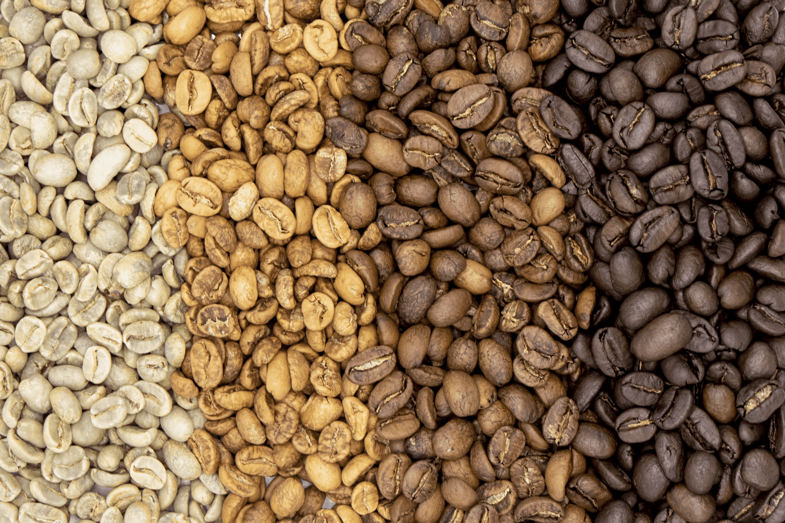

Tipos de Cafe
Existen dos tipos de granos de café: Arabica y Robusta. Arabica es la variedad más popular y tiene un sutil sabor aromático, mientras que Robusta contiene más cafeína.

Pasos para tostar los granos de cafe
- Secar los granos verdes
- Dorar granos de cafe
-
Tostar granos de cafe
- Grado de tostado
- Tiempo de tostado
- Enfriado de los granos
